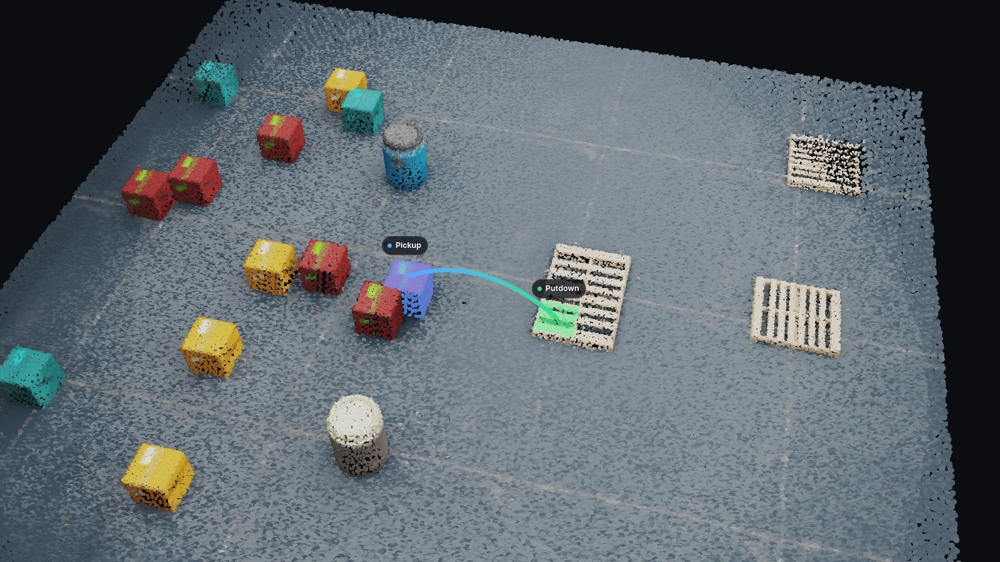
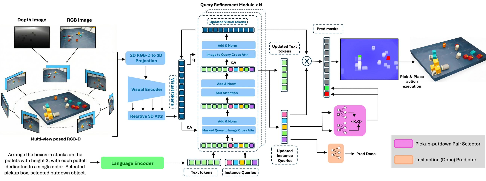
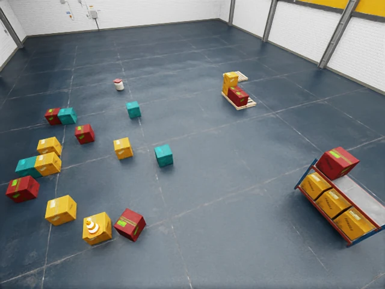
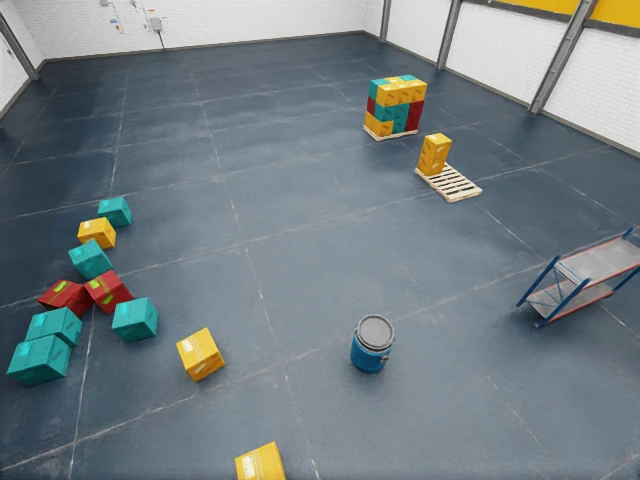
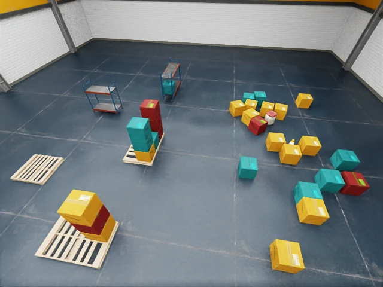
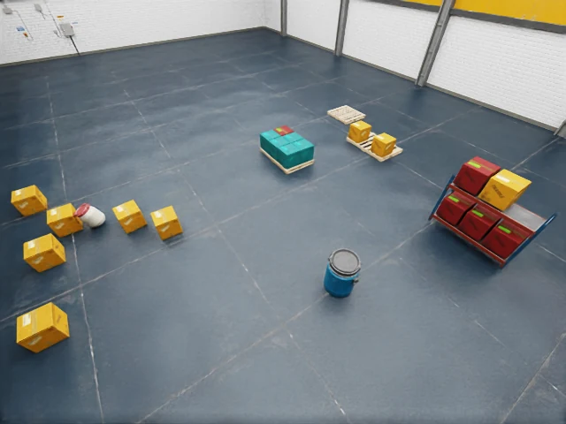
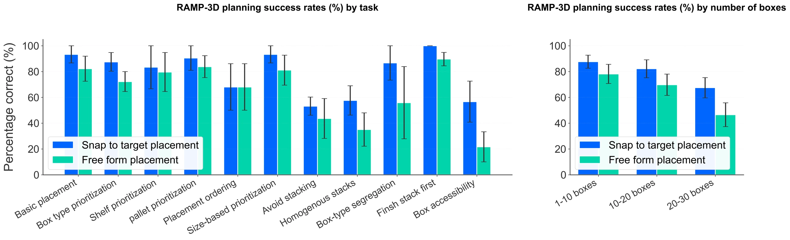
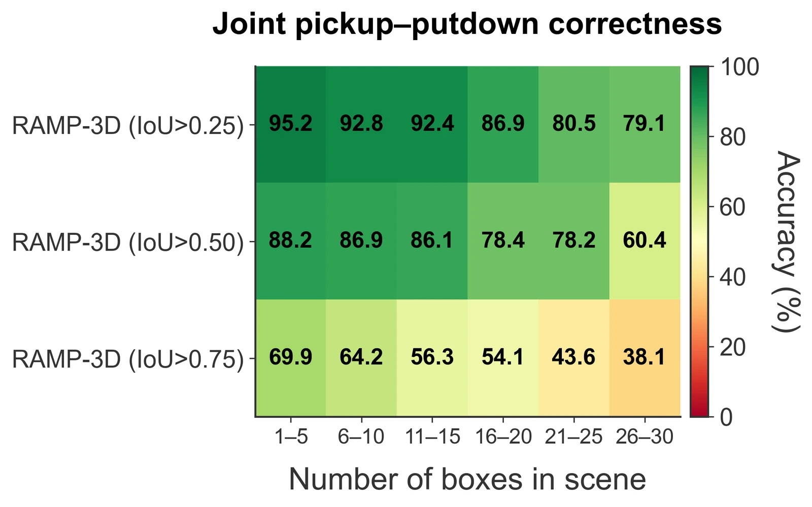
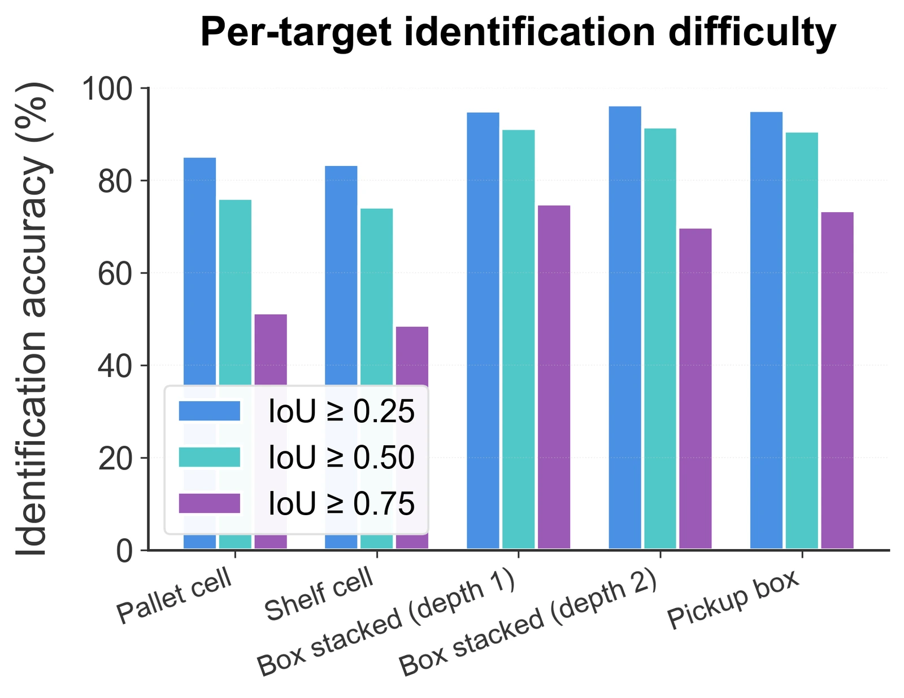

Paired action masks
At each step the model predicts a which-object mask and a which-target-region mask over the point cloud. In simulation, each mask is mapped to the object or region it covers most, which gives a discrete pick-and-place action.
School of Electrical Engineering and Computer Science, Oregon State University
ICAPS 2026
We study long-horizon planning in 3D environments from under-specified natural-language goals using only visual observations, focusing on multi-step 3D box rearrangement tasks. Existing approaches typically rely on symbolic planners with brittle relational grounding of states and goals, or on direct action-sequence generation from 2D vision-language models (VLMs). Both approaches struggle with reasoning over many objects, rich 3D geometry, and implicit semantic constraints. Recent advances in 3D VLMs demonstrate strong grounding of natural-language referents to 3D segmentation masks, suggesting the potential for more general planning capabilities. We extend existing 3D grounding models and propose Reactive Action Mask Planner (RAMP-3D), which formulates long-horizon planning as sequential reactive prediction of paired 3D masks: a “which-object” mask indicating what to pick and a “which-target-region” mask specifying where to place it. The resulting system processes RGB-D observations and natural-language task specifications to reactively generate multi-step pick-and-place actions for 3D box rearrangement. We conduct experiments across 11 task variants in warehouse-style environments with 1–30 boxes and diverse natural-language constraints. RAMP-3D achieves 79.5% success rate on long-horizon rearrangement tasks and significantly outperforms 2D VLM-based baselines, establishing mask-based reactive policies as a promising alternative to symbolic pipelines for long-horizon planning.
Each task is a natural-language goal in a randomly generated warehouse scene with red, blue and yellow boxes, pallets, two-layer shelves and distractor objects. Goals constrain both the final arrangement and the order in which boxes are placed. The videos show complete solutions from the oracle planner that generates our training data, not RAMP-3D predictions.
pickup box putdown target
RAMP-3D extends UniVLG, a model that grounds referring expressions to 3D segmentation masks, to sequential planning. At each step it takes multi-view RGB-D observations and the language goal, and predicts a pickup mask and a putdown mask over the reconstructed point cloud. The animation below walks through one such step.

Goal
RAMP-3D builds on UniVLG. Each RGB-D view is passed through a Swin Transformer backbone, and the resulting pixel features are back-projected into 3D using depth and the known camera poses. A multi-view attention module then turns them into 3D visual tokens that encode both appearance and geometry. The language goal is encoded by a frozen RoBERTa text encoder. A transformer decoder with learnable queries alternates self-attention between the queries with cross-attention to the visual and text tokens. Each query outputs a mask over the 3D points and a score for which words of the goal it refers to.

RAMP-3D changes what the decoder predicts and adds two components on top of its queries.
At each step the model predicts a which-object mask and a which-target-region mask over the point cloud. In simulation, each mask is mapped to the object or region it covers most, which gives a discrete pick-and-place action.
Two linear projections give each decoder query a pickup embedding and a putdown embedding, and their dot product scores a candidate pair. At inference, each of the top 5 pickup queries is scored against all putdown queries, and the pair with the highest combined confidence and compatibility is selected.
An MLP with one hidden layer takes all decoder queries and predicts whether the current action is the last one. The scene is observed again after each action, so the planner keeps no symbolic state between steps.
Scenes are generated in a 12 m × 12 m simulated warehouse with up to 3 pallets (4 or 6 cells, stackable up to 3 high), up to 2 two-layer shelves, up to 30 boxes of three colors, and up to 4 distractors. An oracle planner provides ~9.5k supervised scene snapshots, each paired with paraphrased language goals.




| Task variant | Description |
|---|---|
| Basic placement | Standard box emplacement with stack height limits. |
| Box type prioritization | Prioritize designated box types before others. |
| Shelf prioritization | Fill all shelves completely before placing boxes on pallets. |
| Pallet prioritization | Fill pallets before placing boxes on shelves. |
| Placement ordering | Follow prescribed left-to-right or right-to-left ordering. |
| Size-based prioritization | Fill pallets or shelves of specified size before others. |
| Avoid stacking | Stack boxes only when no unstacked locations remain. |
| Homogeneous stacks | Each stack must contain a single type of boxes. |
| Box-type segregation | Each pallet or shelf must contain a single type of boxes. |
| Finish stack first | Finish current stack before selecting other locations. |
| Box accessibility | Keep selected box types accessible by placing them on top of stacks or in homogeneous stacks. |
We compare against 2D-pointer, a two-stage 2D VLM baseline in which GPT-5.1 describes the pickup box and putdown location from five views and Molmo-72B points to them in a top-down image.
| Num. boxes | RAMP-3D | 2D-pointer |
|---|---|---|
| 1–10 | 97.9 | 42.4 |
| 11–20 | 97.1 | 39.2 |
| 21–30 | 94.4 | 43.1 |
| Aggregate | 96.8 | 41.4 |
| Putdown target | RAMP-3D | 2D-pointer |
|---|---|---|
| Pallet cell | 0.167 ± 0.11 | 0.125 ± 0.06 |
| Box | 0.124 ± 0.08 | 0.132 ± 0.07 |
| Aggregate | 0.142 ± 0.09 | 0.129 ± 0.07 |
Placement errors are similar for the two methods. 2D-pointer’s lower one-step validity comes from target selection: it produces a feasible pickup–putdown pair in only 33.9% of test samples, and matches the oracle’s pair in 2.0%.



| Experiment | 1–10 | 11–20 | 21–30 | Agg. |
|---|---|---|---|---|
| Held-out language templates | −4.3 | −5.6 | −2.3 | −4.4 |
| Without auxiliary grounding tasks | −2.4 | −2.1 | −0.8 | −1.9 |
@inproceedings{malik2026ramp3d,
title = {Grounding Vision and Language to 3D Masks for Long-Horizon Box Rearrangement},
author = {Malik, Ashish and Lowe, Caleb and Shrestha, Aayam and Lee, Stefan and Li, Fuxin and Fern, Alan},
booktitle = {Proceedings of the International Conference on Automated Planning and Scheduling (ICAPS)},
year = {2026},
eprint = {2603.23676},
archivePrefix = {arXiv},
url = {https://arxiv.org/abs/2603.23676}
}